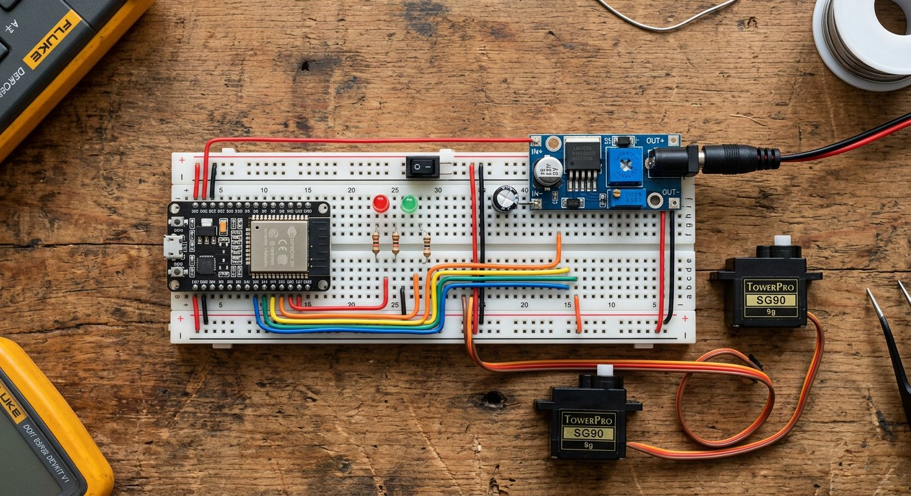

Qué cubre esta guía
Ventajas del ESP32 frente al Mega
| Característica | Arduino Mega | ESP32 |
|---|---|---|
| Velocidad de CPU | 16 MHz | 240 MHz (doble núcleo) |
| RAM | 8 KB | ~520 KB |
| WiFi / Bluetooth | No (módulo externo) | Integrado |
| Lógica de pines | 5V | 3.3V |
| Ideal para | Muchos pines 5V | Procesamiento y control remoto |
El ESP32 sobresale cuando el brazo necesita control inalámbrico (WiFi o Bluetooth sin módulos extra) y procesamiento (cinemática, filtros de sensores, visión). El Mega sigue siendo cómodo para cableado simple con muchos periféricos de 5V.
La lógica de 3.3V: lo que debes cuidar
El ESP32 trabaja con señales de 3.3V, y esto tiene dos implicancias:
- Señal de control hacia el servo: la mayoría de los servos aceptan el PWM de 3.3V sin problema, pero algunos drivers exigen 5V; en ese caso, usa un convertidor de nivel lógico de 3.3V a 5V.
- Entradas al ESP32: no conectes directamente señales de 5V (como la salida de un sensor de 5V) a los pines del ESP32, que no son tolerantes a 5V; usa divisor de tensión o conversor de nivel.
PWM para servos con LEDC
El ESP32 no usa analogWrite() como Arduino: usa el periférico LEDC, que genera PWM por hardware en casi cualquier pin. Para un servo, se configura un canal con:
- Frecuencia: 50 Hz (período de 20 ms), el estándar de los servos.
- Resolución: 16 bits para un control fino del ancho de pulso.
- Ancho de pulso: entre 500 y 2500 microsegundos, correspondientes a 0° y 180°.
La librería ESP32Servo envuelve todo esto con una interfaz idéntica a la librería Servo de Arduino, de modo que el código es prácticamente el mismo.
Código: mover servos con ESP32Servo
#include <ESP32Servo.h>
Servo base, hombro, codo;
const int PIN_BASE = 13;
const int PIN_HOMBRO = 12;
const int PIN_CODO = 14;
void setup() {
// Permite asignar cualquier pin con LEDC
ESP32PWM::allocateTimer(0);
ESP32PWM::allocateTimer(1);
ESP32PWM::allocateTimer(2);
base.setPeriodHertz(50); // frecuencia estandar de servos
hombro.setPeriodHertz(50);
codo.setPeriodHertz(50);
base.attach(PIN_BASE);
hombro.attach(PIN_HOMBRO);
codo.attach(PIN_CODO);
base.write(90);
hombro.write(90);
codo.write(90);
}
void loop() {
base.write(45);
delay(1000);
base.write(135);
delay(1000);
}La ventaja del ESP32 es que casi cualquier pin puede ser PWM, lo que da libertad para ordenar el cableado y reservar pines para sensores y comunicación.
Control inalámbrico por WiFi y MQTT
El camino más limpio para control remoto es MQTT: el ESP32 se suscribe a un tema por articulación y aplica los ángulos que recibe. La ventaja es que cualquier dispositivo (celular, computador, otro ESP32) puede enviar comandos, y el brazo responde en tiempo real.
El patrón completo —broker, temas, publicación y suscripción— está detallado en la guía de MQTT. Para un brazo, basta adaptar el callback para que cada mensaje contenga el ángulo de una articulación:
// Callback MQTT adaptado a un brazo:
// topic: brazo/base -> payload: "90"
// topic: brazo/hombro -> payload: "45"
void callback(char* topic, byte* payload, unsigned int length) {
int angulo = atoi((char*)payload);
if (String(topic) == "brazo/base") base.write(angulo);
if (String(topic) == "brazo/hombro") hombro.write(angulo);
if (String(topic) == "brazo/codo") codo.write(angulo);
}Control por Bluetooth
Para control local sin red, el ESP32 también integra Bluetooth Classic. La librería BluetoothSerial crea un puerto serial inalámbrico al que puedes conectar una app y enviar comandos como base:90 o codo:45:
#include <BluetoothSerial.h>
BluetoothSerial BT;
void setup() {
BT.begin("BrazoRobotico"); // nombre visible del dispositivo
base.attach(PIN_BASE);
}
void loop() {
if (BT.available()) {
String comando = BT.readStringUntil('\n');
// parsea "articulacion:angulo" y aplica el movimiento
int sep = comando.indexOf(':');
String articulacion = comando.substring(0, sep);
int angulo = comando.substring(sep + 1).toInt();
if (articulacion == "base") base.write(angulo);
}
}Este enfoque es ideal para una app propia o para usar terminales Bluetooth existentes, sin depender de infraestructura de red.
Alimentación del ESP32 con servos
- ESP32: se alimenta por su pin 5V/VIN con 5V, o por USB durante el desarrollo.
- Servos: fuente externa de 5-6V con varios amperios, compartiendo solo la tierra con el ESP32.
- Convertidor de nivel: opcional para las señales de control si tus servos lo exigen.
Problemas comunes y soluciones
| Síntoma | Causa probable | Solución |
|---|---|---|
| El servo no se mueve | Falta tierra común o pin equivocado | Conectar GND de la fuente al GND del ESP32 |
| El servo se mueve errático | Señal de 3.3V no aceptada | Usar conversor de nivel a 5V |
| El ESP32 se reinicia | Servos alimentados desde la placa | Fuente externa para los servos |
| No se conecta al WiFi | Credenciales o fuente inestable | Verificar SSID/password y fuente de 5V estable |
| El servo tiembla en reposo | PWM ruidoso o fuente compartida | Fuente estable y condensador en el riel |
Conclusión
El ESP32 convierte un brazo robótico en un sistema conectado: WiFi, Bluetooth y potencia de procesamiento en una placa que cabe en la palma de la mano. Con las precauciones de 3.3V y una buena alimentación, tienes la base para control remoto, cinemática en tiempo real y, más adelante, visión por computador con la ESP32-CAM. Para cerrar el lazo de control con precisión, el siguiente paso son los encoders de articulación.
Preguntas frecuentes
¿Qué ventajas tiene el ESP32 frente al Arduino Mega para un brazo robótico?
El ESP32 tiene un procesador de doble núcleo mucho más rápido (240 MHz frente a 16 MHz del Mega), más memoria RAM, y WiFi y Bluetooth integrados, lo que permite controlar el brazo de forma inalámbrica sin módulos adicionales y ejecutar cálculos de cinemática o filtros de sensores con holgura. Su desventaja es que trabaja con lógica de 3.3V, por lo que hay que cuidar las señales hacia los servos, y tiene menos pines tolerantes a 5V. Para un brazo con control remoto y procesamiento, el ESP32 es la opción moderna; para cableado simple con muchos pines de 5V, el Mega sigue siendo cómodo.
¿Puedo conectar servos de 5V directamente a un ESP32 de 3.3V?
La alimentación de los servos debe ir siempre por una fuente externa de 5-6V, nunca por el pin de 3.3V del ESP32. Sobre la señal de control, la mayoría de los servos aceptan el PWM de 3.3V del ESP32 sin problema, porque el umbral de lectura del servo suele ser bajo; sin embargo, algunos servos y drivers exigen una señal de 5V, y en ese caso conviene un convertidor de nivel lógico de 3.3V a 5V. La regla práctica: alimenta siempre los servos por separado y, ante duda en la señal, usa un conversor de nivel.
¿Cómo genero PWM para servos en el ESP32?
El ESP32 no usa analogWrite() como Arduino: usa el periférico LEDC, que genera señales PWM por hardware en casi cualquier pin. Para un servo se configura un canal LEDC con frecuencia de 50 Hz y resolución de 16 bits, y se escribe el ancho de pulso correspondiente al ángulo (normalmente entre 500 y 2500 microsegundos). La librería ESP32Servo simplifica todo envolviendo LEDC con una interfaz idéntica a la librería Servo de Arduino, por lo que el código es casi el mismo.
¿Cómo controlo el brazo de forma inalámbrica con el ESP32?
El ESP32 ofrece dos caminos: WiFi y Bluetooth. Por WiFi, el enfoque más limpio es MQTT: el ESP32 se suscribe a temas donde recibe los ángulos de cada articulación y los aplica, permitiendo control desde el celular o un servidor, como se explica en la guía de MQTT de este sitio. Por Bluetooth, puedes usar Bluetooth Classic con la librería BluetoothSerial para recibir comandos seriales desde una app. La ventaja del ESP32 es que ambas opciones están integradas, sin módulos externos.
¿Qué fuente de alimentación necesito para un ESP32 con servos?
Necesitas dos alimentaciones separadas: el ESP32 se alimenta por su pin 5V/VIN con 5V (o por USB durante el desarrollo), y los servos con una fuente externa de 5-6V con suficiente corriente (varios amperios para seis servos), compartiendo solo la tierra. No intentes alimentar los servos desde el pin de 3.3V o 5V del ESP32: la corriente que demandan supera lo que la placa puede entregar y provocará reinicios o daños. Este principio de separación lógica/potencia aplica a cualquier placa, incluido el ESP32.
Este artículo es contenido editorial independiente: no contiene ubicaciones patrocinadas ni enlaces de afiliado. Si en futuras actualizaciones se agregan enlaces a proveedores de componentes, serán identificados explícitamente. El código y las conexiones son referenciales y deben adaptarse y probarse con tu propio hardware. Si detectas un error en esta guía, por favor avísanos.
Sigue aprendiendo
Mejora la precisión del brazo con los Encoders de Articulación, o sube de nivel los actuadores con los Servos Inteligentes.
Fuentes primarias y lecturas recomendadas
Referencias que sustentan los conceptos generales de la guía. Los detalles pueden variar según la placa y la versión del núcleo ESP32.
- Espressif — Documentación oficial del ESP32
- ESP32Servo — Librería de servos para ESP32
- PubSubClient — Librería MQTT para Arduino/ESP32
Enlaces revisados: 13 de agosto de 2026.